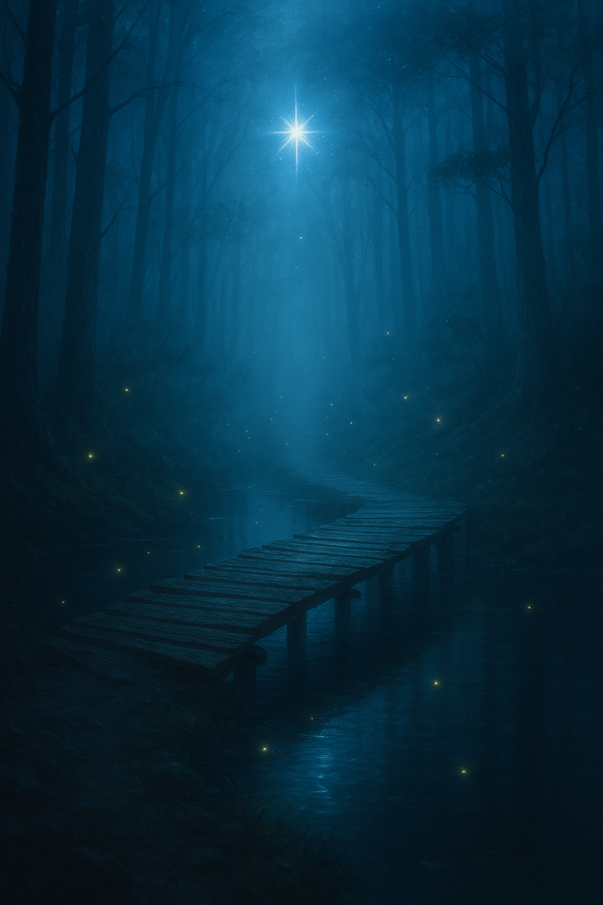
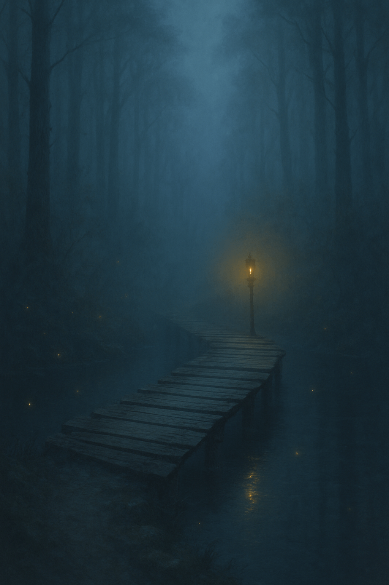

Portfolyo Sitesi
Suya yakınsın; sis, yüzeye alçak bir şarkı gibi yayılıyor. İnce, uzun bir köprü var: tahtaları yaş, çivileri sabırlı. Köprü fısıldıyor: “Işığa mı, iç sesine mi güvenirsin?” Işık, dışarıdan gelen rehberlik; iç ses, içeride büyüyen pusula.
Işığa güvenirim.🌈

İç sesime güvenirim.⛬
